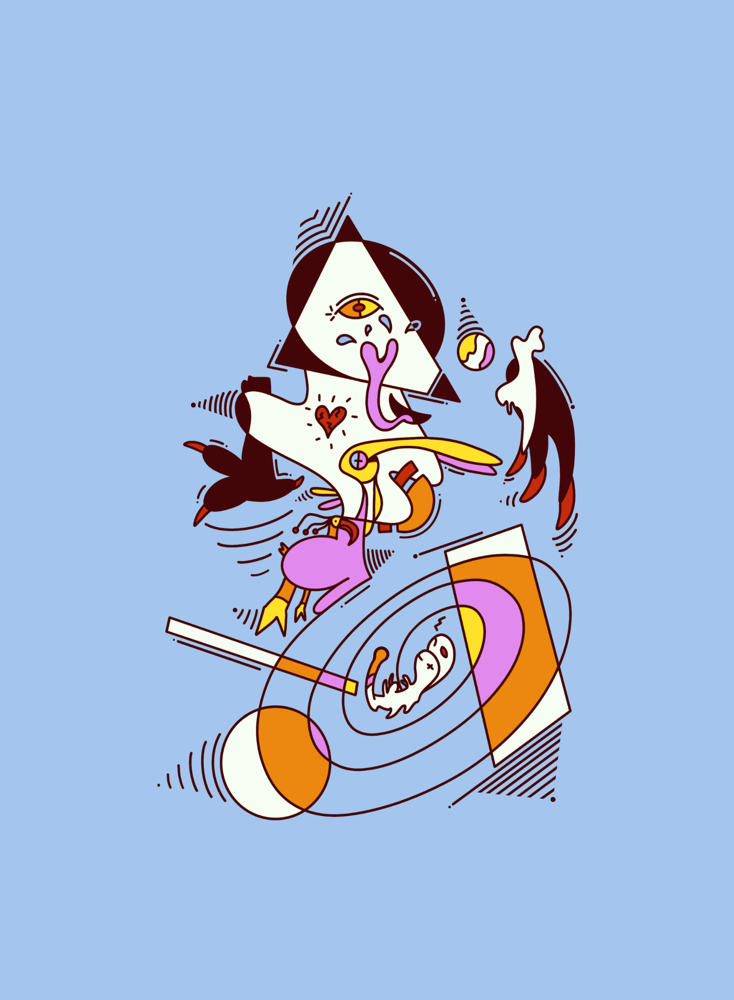
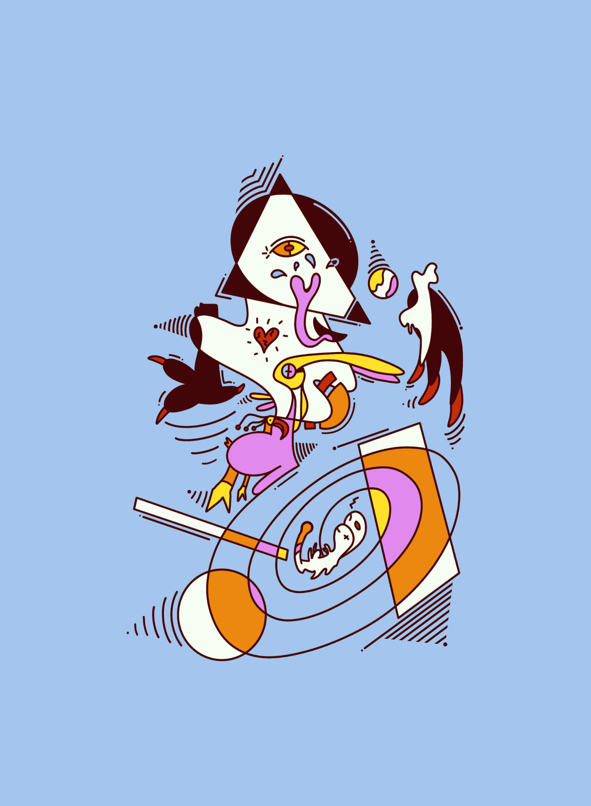
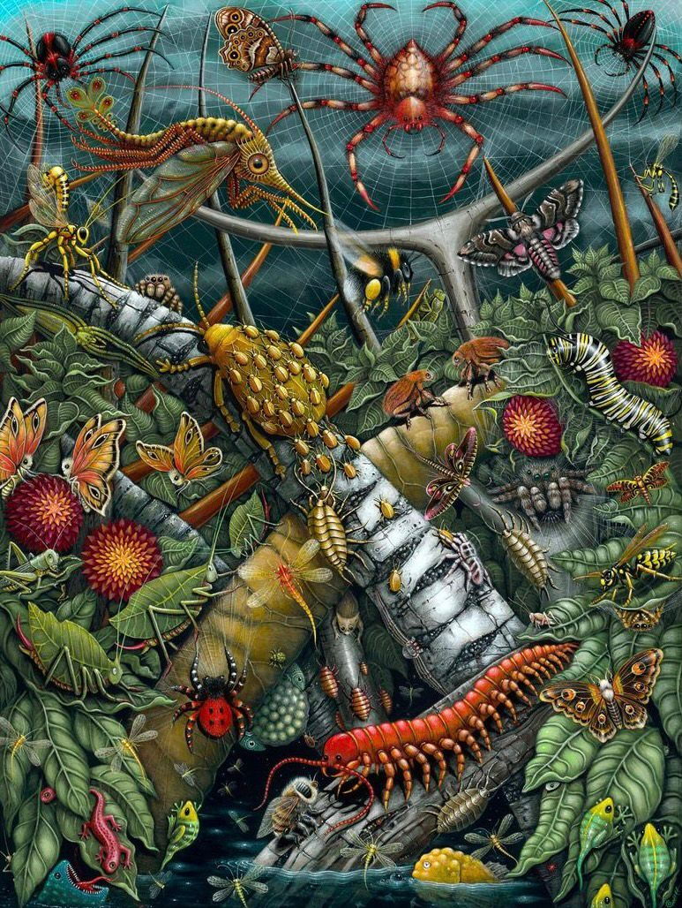

 Dit schilderij van Robert S. Connett, is gemaakt in 2022. Het heet ''ORB WEAVERS''. Robert laat in enorm veel detail zien wat hij kan en is er erg goed in. In zijn werk is terug te zien dat wat hij maakt, maakt hij voor zichzelf. het maakt hem niet uit hoe raar of eng het is, hij maakt wat hij wil, en hier geloof ik ook in. Uit bewondering aan insecten is hij begonnen aan dit werk. Meestal laat hij in zijn schilderijen zeedieren, robots, aliens, skeletten en prehistorische planten zien. Allerlei interessante stukken dus. Deze kunstenaar verkoopt zijn werk ook. Wat hij doet en het werk wat hij maakt sluit enorm aan op mijn interesses, en daarom is hij zo een grote inspiratie voor mij.